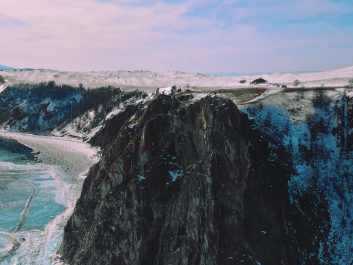
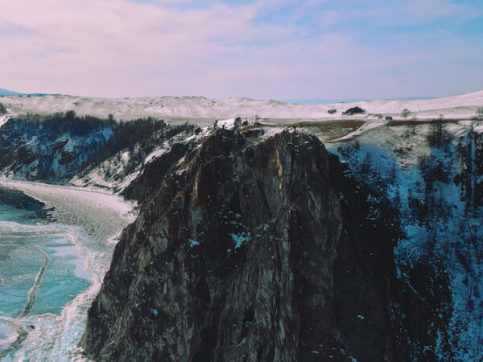

Путешествия по России
Настоящая страна не в выпусках новостей, а здесь.

ваша полка — верхняя
Настоящая страна не в выпусках новостей, а здесь.
ваша полка — верхняя
По опросам ВЦИОМ, 95% россиян мечтают куда-нибудь поехать, но только 36% планируют провести отпуск в родной стране. Мол, чего мы тут, дома, не видели? На самом деле, Россия — это целая вселенная с ласковым морем юга, густыми лесами Саян и суровыми льдами плато Путорана. А ещё увидеть все эти красоты можно без миллионов на счету, загранпаспорта и многочасовых перелетов. Как, например, Вера Башмакова — смелая молодая мама, которая взяла в охапку троих детей, усадила их в свою «Ладу» и проехала 20 тысяч километров по родной стране. Мы выбрали и описали некоторые интересные места, достойные вашего отпуска.
Часовых поясов 11
Объектов природного наследия ЮНЕСКО 12
Объектов культурного наследия ЮНЕСКО 16
Природных заповедников 105
Аэропортов 241


 
